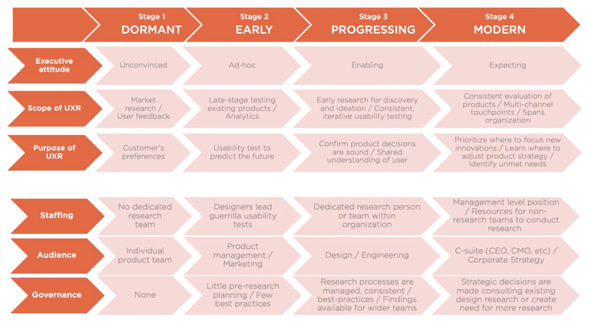

"If you think good design is expensive, you should look at the cost of bad design"
– Dr. Ralf Speth, CEO. Jaguar
The goal of user experience design (UX design) is to solve problems in people's lives and help them reach their goals. However this can be difficult, as we are usually designing for people with different needs and experiences than ourselves.
By completing UX research, which aligns the designers world-view with that of the customer, it enables us to make better design decisions. These decisions result in better experiences, products and services that address user needs and achieve business goals.
Further reading: The Value of UX Design ↗
Making the business and financial case for investing in UX design.
A UX designers skillset can range from strategy, research, concepting to design, pitching or development. Individual designers skills can either be very broad, with general skills across all areas, or speicifc, with a focus on a single area or two. A sucsessful UX team should contain a range of skills which adapt based on project needs.
Roles in UX Design
An overview of the different skills used within the field of UX.
Within each organisation there will be different levels of UX knowledge and support. Depending on your situation, you may need to invest more time into maturing the view of various stakeholders to ensure UX is a vital to your product or service.
Source: Conducting UX Research, Krispian Emert